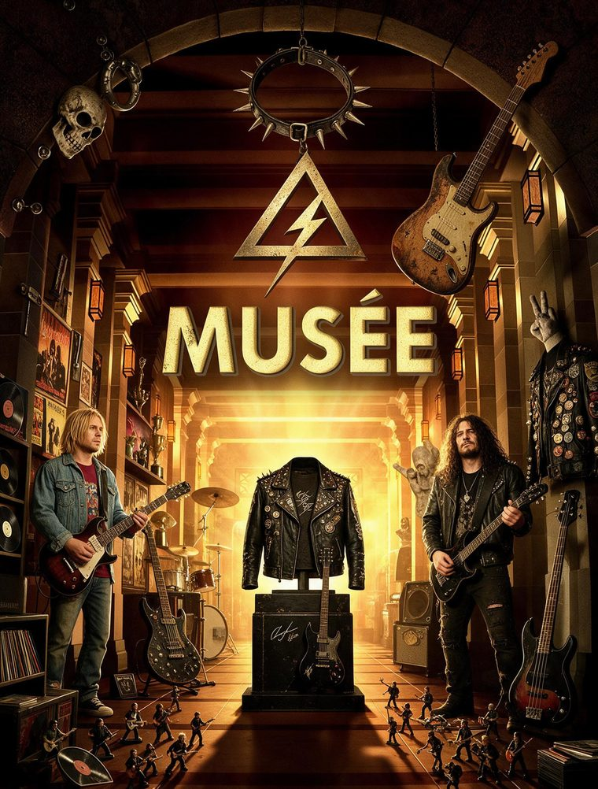

LE MUSÉE
Les objets qui ont suivi le groupe.
Le quatuor d'origine, sans instruments « normaux » : guitare à une corde, boîte de K7 en bois, synthé smooby. Bref, tout pour réussir... Ce qui a survécu de tout ça est exposé ici, photo par photo.

Les pièces du musée
La collection
Les objets qui ont suivi le groupe, encadrés comme des pièces de musée. Cliquez sur une photo pour la voir en grand.
LE MUSÉE S'AGRANDIT
Les vitrines ne sont pas toutes remplies.
La batterie Tama, les amplis du sous-sol, les K7 de Desastrax, les affiches, les pochettes : il reste des pièces dans les cartons. Si tu as gardé un objet de cette histoire, ou sa photo, il a sa place dans le musée.
PROPOSER UN OBJET